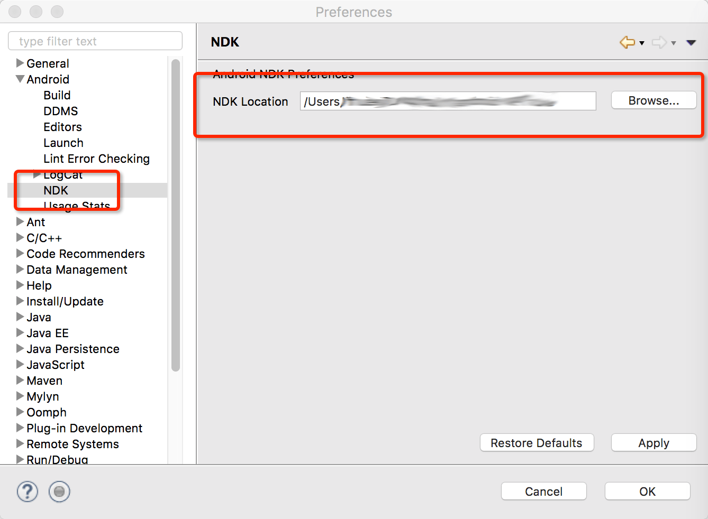
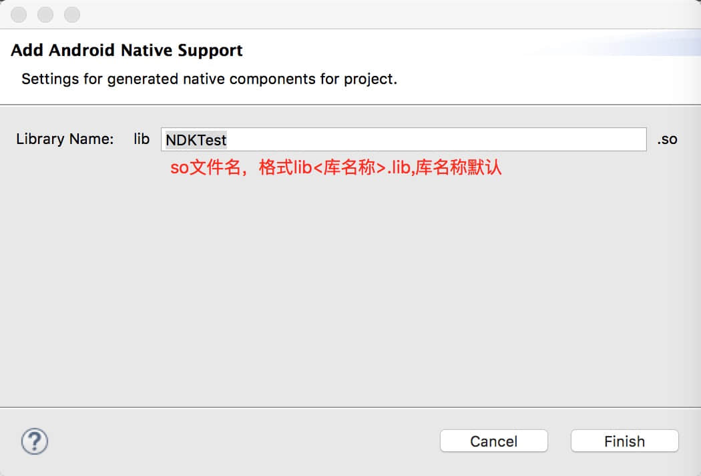
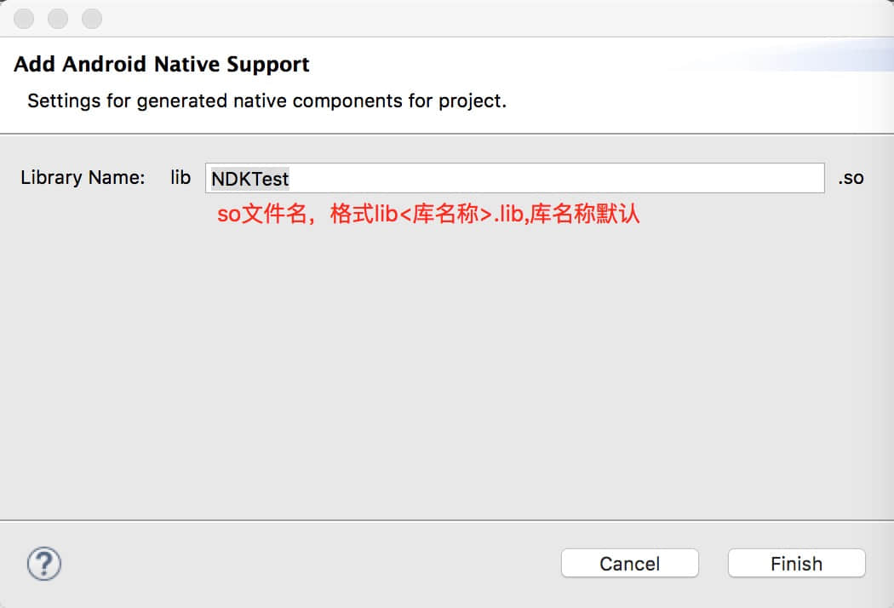
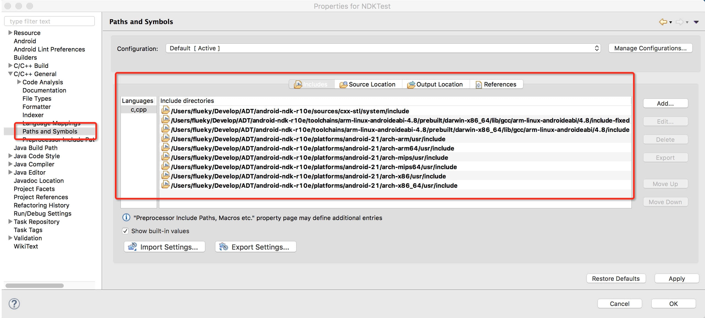
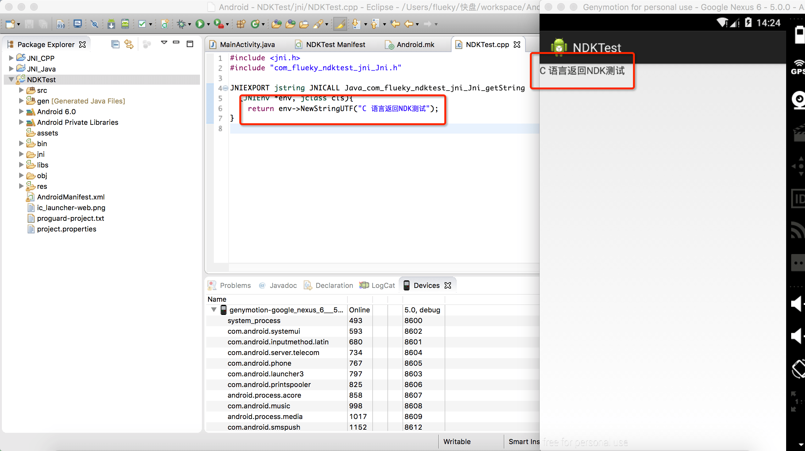

相信伙伴们看完前两篇博文[eclipse搭建JNI开发环境](/blog/2016-03-21/)和[一个例子掌握JNI开发](/blog/2016-03-22/)之后，很想在Android手机上跃跃欲试。话不说多，首先开门见山示例一次构建NDK开发流程，之后再讲解本宝宝在工作之中遇到的一些问题。
配置NDK
开发安卓程序时，我们需要在电脑上安装sdk。同理，现在我们需要安装NDK。第一次听说过没关系，Google被封了不知道从哪下载也没关系。宝宝倾情奉献NDK最新版本的（截止当前）下载地址：android-ndk-r15c-windows-x86.zip、android-ndk-r15c-windows-x86_64.zip、android-ndk-r15c-darwin-x86_64.zip、android-ndk-r15c-linux-x86_64.zip。下载完成后在eclipse配置，如图：
Add Native Support
新建android工程，右键工程名称，选择Android Tools->Add Native Support，弹出一个窗口提示输入so文件的名称。文件格式同lib<工程名>.lib。
 

配置JNI库
添加好支持的库之后，系统会自动生成对应的目录和文件。在<工程名>.cpp文件中，会自动导入头文件。如果仍然提示找不到jni.h头文件的错，参照配置JNI开发环境[eclipse搭建JNI开发环镜](/201/)添加对应的库。不同的是，这次是在NDK目录中添加对应的文件夹。所有包含的头文件夹参照下图：
编写代码，测试结果
如果成功的做到这一步，那么恭喜你，你已经成功的构建了NDK的开发环境。可以根据需求，使用C语言实现对应的功能。但是如果工程大，需要编译多个源文件呢？如果需要调用SDK里的类库呢？如果需要在so里面输出log日志呢？如果需要编译不同CPU指令集的so文件呢？当在工作中真正开发的时候依然会遇到N多问题。包括开启debug模式，到目前为止仍然不会。
Application.mk
细心的你也许发现，在导入头文件的时候，已经包含了6种指令集的头文件。编译时候，需要添加一个文件
APP_ABI := armeabi armeabi-v7a x86
armeabi最常见的一个。用过genymotion的小伙伴也许头疼过，当工程中导入过so文件之后，发现自己的应用在genymotion上总是运行不了，因为绝大多数提供so库的厂商，只提供前两个armeabi、armeabi-v7a。只是genymotion是基于virtualbox运行的虚拟机，其指令集是模拟计算机CPU的，所以添加一个支持x86指令集的so文件就可以正常运行程序了。要编译多个类型的so文件，名称需要用空格分开。当需要编译支持所有指令集的so文件，无须列举出所有的名称，一个all搞定。
APP_ABI := all
android.mk
LOCAL_PATH := $(call my-dir)
include $(CLEAR_VARS)
LOCAL_MODULE := yt_safe
LOCAL_SRC_FILES := yt_safe.cpp crypto/crypto.cpp file/file.cpp
LOCAL_LDLIBS := -L$(SYSROOT)/usr/lib -llog
LOCAL_LDLIBS += -landroid
include $(BUILD_SHARED_LIBRARY)
参照上述代码，编译多个cpp文件时，需要列举出所有的cpp文件，用个空格分开。要用到sdk库时，需要再用到LOCAL_LDLIBS变量。第一个值，支持输出log日志，第二个值支持引用SDK中的类。
编译头文件
当编译头文件时，遇到参数类型是Context 等其他android.jar中的类型时，指令如：
javah -classpath /Users/Android/android-sdk/platforms/android-xy/android.jar:. com.test.JniTest
需要指定sdk目录下具体android.jar的路径，我用到的命令是：
javah -classpath /Users/flueky/Develop/ADT/sdk/platforms/android-21/android.jar:. com.flueky.demo
:. 之后才是需要编译的Java文件的路径。